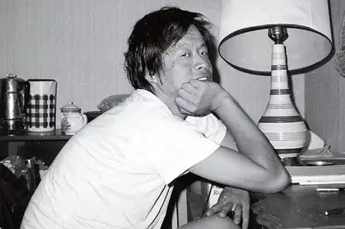

很早以前，我就想写点关于王小波的什么。
但一直没写。
可能就是因为太喜欢了，近情而怯，反倒不知如何下笔。 在我更年轻的时候，遇见他的《黄金时代》，神魂颠倒，从此以后，他像一个钉子一样钉进我的生命。 那时候我还不知道，他已经离开人间。 1996年，他在机场给予李银河最后的拥抱，从此阴阳两隔。 次年，他离开人世。 离开的时候，身边无人，一个人在地板上蜷曲着死去，墙上留有深刻的抓痕。如此用力的挣扎，可以想见痛苦万分， 内心不甘不愿。 他的死讯传来，中国多少读者悲痛万分。
永失我爱，天地无光。
多年以后，遇见他的杂文集，如见天人，心生大遗憾：余生也晚，未曾于他在世时， 就被他的智慧所照亮，更遗憾的，是不曾在他离开时，用眼泪为他送行。 但斯人已去，再遗憾，也无济于事了。 好在，深情而智慧地活过的人，我相信都如维特根斯坦，会在挥别之际，欣然或豁然曰： 告诉他们，我度过了美好的一生。
“真正的好文字是什么样的？”
“它会有磷光。”
这是一个朋友与我的对话。王小波的文字就是这样。 它是有磷光的，智慧是晶体，深情是射光，趣味是余辉，经久不息地留存于人世。
他是诗意的，也是自由的；
他是有趣的，也是智慧的；
他是丑陋的，也是美的。
他独来独往，无门无派，特立独行。
高晓松却把他当成“神一样的存在”、 “中国白话文第一人且甩开第二名很远”； 冯唐说他是“一个奇迹”、“一个好得不得了的开始”。 他的妻子称他是“世间一本最美好、最有趣、最好看的书。”
对于我呢？
他是一个理想。一个我穷极一生，都在努力抵达的地方。一个形容词，涵义是自由、智慧、幽默、美。 一个接头暗号，一个结交思想同盟军的密码，一个辨识审美情趣、价值观与生活态度的隐性法则。
如果以偶像标准来衡量王小波，他当然是丑的。高瘦粗壮，脸色黑黄，嘴唇发紫， 大舌头，微有结巴，因幼时缺钙，患了佝偻病，长着缺钙儿典型的桶状胸。在云 南下乡时，王小波总是一根裤腿长、一根裤腿短，走起路来吊着膀子、弓着腰， 一晃一晃的，乱七八糟的头发从来不梳，白色的背心穿成黄色的，然后再穿成黑 色的。他几乎不洗衣服。衣服穿脏了之后，挂在门外，一直晾着，等到下次要穿 的时候直接穿上去。就这样反反复复穿上好几次。老知青段炳芹忍无可忍，一度 还每周帮他洗一次衣服，当时人人皆认为，“北京知青里，再没有比他更脏的”。
刘心武回忆起小波第一次拜访他，称“吓了一跳”，“没想到他这么高”，“不客气地 说，觉得丑，而且丑相中还带着一点凶样。”于是，他从美国回来，蓬头垢面， 站在自己家门口，许多人以为他们家被贼惦记上了。有邻居跑去找到他妈，说： 快回家去看看，你家门口站了一人，看起来不像好人。他妈回家一看，原来是自 己儿子。
王小波当然知道自己的不美。
他自嘲道：“我远看不像个好人，近看还是个好人。”
他有一个同学，名叫刘晓阳，曾回忆说，王小波为人厚道，在班上是个典型的老
好人，对任何同学提出的任何要求从来不会说不，和每一个同学关系都很好。
当然，他的好，绝非不说不，而是他创造美好的、诗意的、井然有序的精神家园。
他不能容许自己成为随波逐流的庸人。
在给李银河的信中，王小波这样写道：
我从童年继承下来的东西只有一件，就是对平庸生活的狂怒，一种不甘落寞的决心。 小时候我简直狂妄，看到庸俗的一切，我把它默默地记下来，化成了沸腾的愤怒。 不管是谁把肉麻当有趣，当时我都要气得要命，心说，这是多么渺小的行为！ 我将来要从你们头上飞腾过去！
他对于被设置的生活，有种本能的抵触。
于是，他描写了一只特立独行的猪，这只猪和普通的猪不一样，它没被阉割，没被囚禁，它才华横溢，聪慧无双，它逃出猪圈，长出獠牙，在原野上欢快地奔跑。他还描写过一群绿毛水怪，自由驰骋于世界，日行千里，远离俗务，尽享古今文明之美，规则与地理的阻隔，全部被弱化到最小程度。 而其他的小说，你都能听到一种相似的声音：不，我才不按你们说的来，我自有我的是非，自有我的善恶。 无论是《黄金时代》，还是《红拂夜奔》，或者其他的小说。
这就是王小波以及王小波门下走狗所向往的世界——自由，诗意，智慧，有序，有趣，美好。
为了抵达这一目的，他们以阅读抵抗平庸；
以写作抵抗荒诞；
以思考抵抗麻木。
也许他们一生，并没有抵达那个目标，但是，他们都是活在这条路上的人。
王小波曾经评价《傲慢与偏见》：
这些人都跟大红门（北京的一屠宰场）架子上的猪一样，等着被人挑选。是啊，假若不自由，所谓的个性、内涵、才华、思想，都只是装饰物或广告词。 说得太对了。 若无自由，荣华也好，富庶也罢，岁月静好亦然，都是漂亮的奴隶。 1992年9月，他正式辞去人民大学教职，做自由撰稿人。
他以实际行动，回答了他在《似水流年》里给主人公提出的问题： 我必须全身心投入，在衰老之下死亡之前不停地写。这样我就有机会在上天所赐的衰老之刑面前，挺起腰杆，证明我是个好样的。 就这样，他拒绝稳定的体制，拒绝被设置的生活，左冲右突，孤身鏖战，成为文学领域的孤单行军。
后来出版了《黄金时代》，亦寂寥无比，我行我素，不交友，不拉帮，不结派，不加入任何文学团队，不与潮流为伍，游离于圈外，一如刘瑜所说： 一个人就像一支队伍……怀才不遇，逆水行舟，对着自己的心灵招兵买马，不气馁，有召唤，爱自由。
在云南的时候，大月亮的夜晚，他就着月光，在玻璃上写诗，直到将玻璃染成蓝色。
他写小说，力争诗化，将沉重的文体，羽化为一只蝴蝶。
他写情诗，那也是天籁：
“你好哇，李银河。”
“祝你今天愉快。你明天的愉快留着我明天再祝。”
“我会不爱你吗？不爱你？不会。爱你就像爱生命。”
“告诉你，一想到你，我这张丑脸上就泛起微笑。还有在我安静的时候，你就从我内心深处浮现，就好像阿芙罗蒂从浪花里浮现一样。”
他形容夜晚的灯光：“大团的蒲公英浮在街道的河流上，吞吐着柔软的针一样的光。” 形容主人公走在人行道上，昏黄的灯光照着他们，他写道：“我们好像在池塘的水底，从一个月亮走向另一个月亮。” 多么美的描述！
虽然他很少写诗，但是他是一个不折不扣的行吟诗人。
他在《万寿寺》的结尾写道：一个人只拥有此生此世是不够的，他还应该拥有诗意的世界。 若一个人，一生都行走智慧、自由、有趣的路上，那么，人生就是一首诗。 王小波的兄长王小平曾说，有些人拥有一颗艺术的内丹。 王小波就是这样。 在他的心中，就孵育着这样的一颗内丹。
从前在一本书上看到，有一回，有人去云南找到王小波插队的地方，问起一个年纪大的人，“你记得王小波吗？” 那人说：“记得，就是那个挺懒的。” 把我笑得快岔了气。 他的懒大概已经是共识。 在读《爱你如同爱生命》时，他自己说：“我哥哥总说我也许会什么事情也做不好，因为我是‘像猪一样懒’。他是个信口雌黄的家伙，不过他说得也许有点道理，总之他说得我灰心丧气。” 然而就是这个懒兮兮的王小波，勤奋地写着，用艺术的内丹，为我们留下了那么多浪漫、深刻、迷人的文字。 这些文字，于智识，它有启发之能； 于审美，有快乐之效。 他所书写的古之今人，今之古人，大智大勇，痴述憨呆，倾国倾城。 他虚构的另类人性争战，以智慧、性爱、有趣为一方，与无智、无性、无爱、无趣的另一方，在今古时空，讨伐争战，这一切，真令人拍手称快。

多年前的一个夏天，午后醒来，看到他说：
有一天，我们都会死去，追求智慧的道路还会有人在走。死掉以后的事我看不到。但在这活着的时候，想到这件事，心里就很高兴。 心里充满不足为外人道的喜悦。
是的，哪怕这世界烟尘滚滚，雾霾重重——
哪怕其他人都已向平庸低头，向现实认输，向无智无趣无性的生活缴械投降——
哪怕你亦想过自我沉沦——
但你终究会深切地知道，有人一直活在黄金时代，浪漫如雪，生活如诗，智慧光芒万丈。他就是王小波。